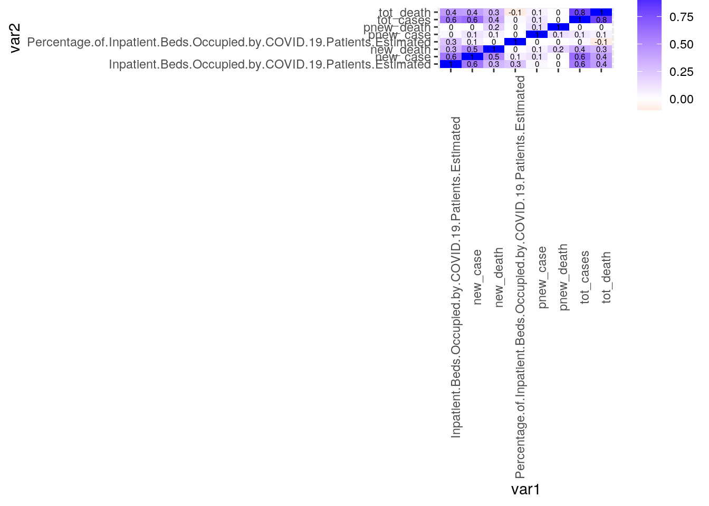
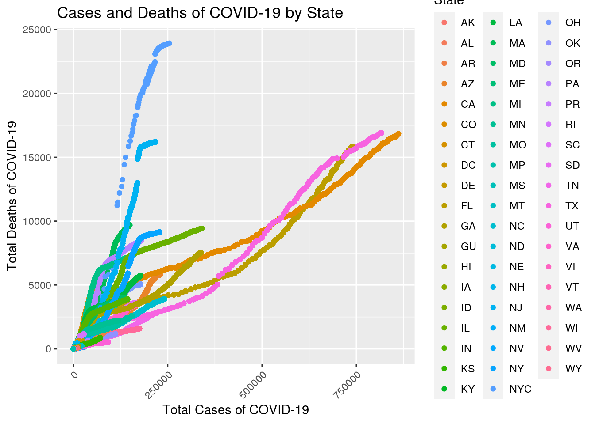
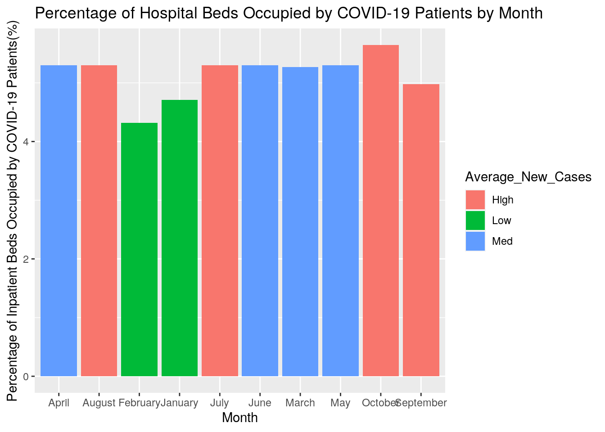
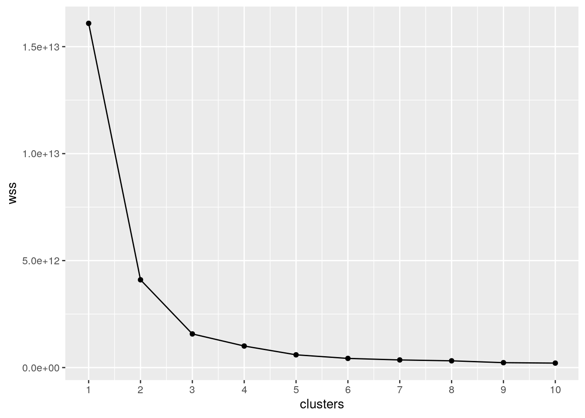
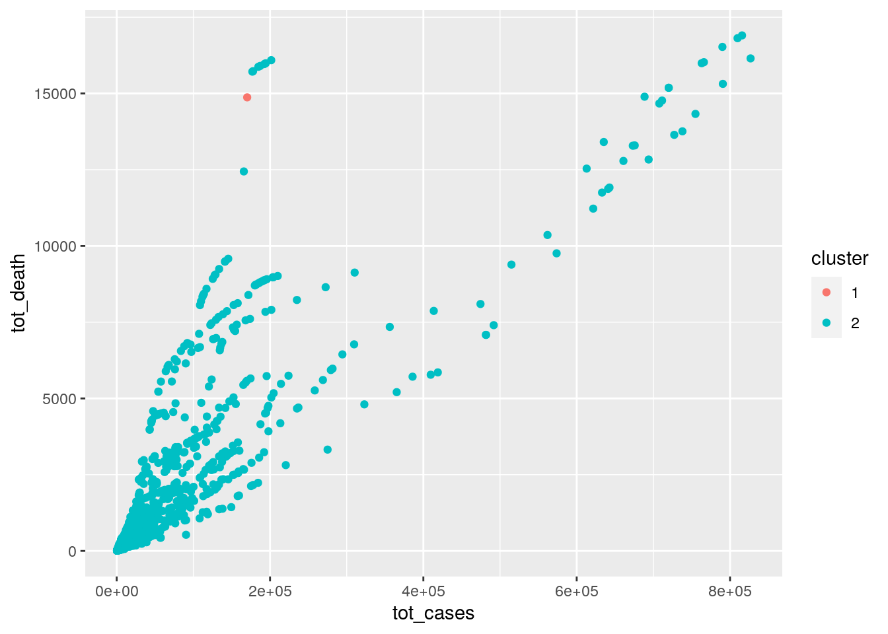
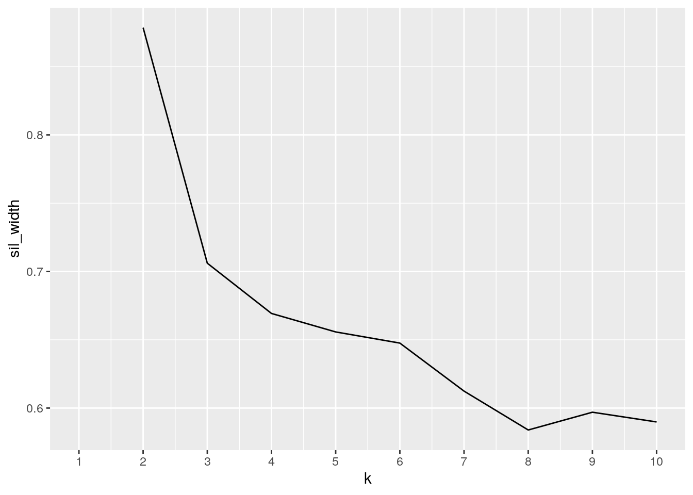
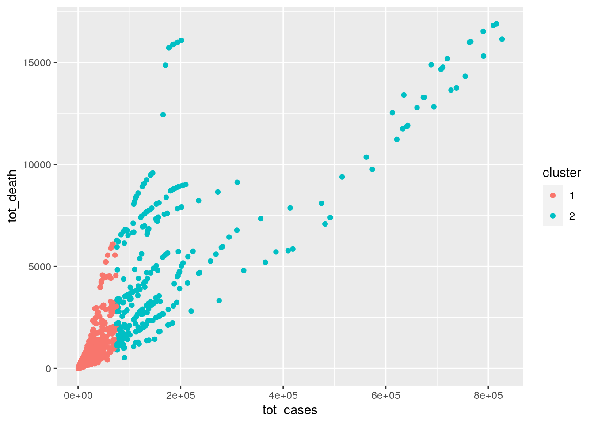

library(tidyverse)
library(tidyr)
library(dplyr)
library(ggplot2)
library(cluster)
Cases_and_Deaths <- read_csv("United_States_COVID-19_Cases_and_Deaths_by_State_over_Time (1).csv")
Cases_and_Deaths <- as.data.frame(Cases_and_Deaths)
head(Cases_and_Deaths)## submission_date state tot_cases conf_cases prob_cases new_case pnew_case
## 1 01/22/2020 CO 0 NA NA 0 NA
## 2 01/23/2020 CO 0 NA NA 0 NA
## 3 01/24/2020 CO 0 NA NA 0 NA
## 4 01/25/2020 CO 0 NA NA 0 NA
## 5 01/26/2020 CO 0 NA NA 0 NA
## 6 01/27/2020 CO 0 NA NA 0 NA
## tot_death conf_death prob_death new_death pnew_death created_at
## 1 0 NA NA 0 NA 03/26/2020 04:22:39 PM
## 2 0 NA NA 0 NA 03/26/2020 04:22:39 PM
## 3 0 NA NA 0 NA 03/26/2020 04:22:39 PM
## 4 0 NA NA 0 NA 03/26/2020 04:22:39 PM
## 5 0 NA NA 0 NA 03/26/2020 04:22:39 PM
## 6 0 NA NA 0 NA 03/26/2020 04:22:39 PM
## consent_cases consent_deaths
## 1 Agree Agree
## 2 Agree Agree
## 3 Agree Agree
## 4 Agree Agree
## 5 Agree Agree
## 6 Agree Agreeinpatient_covid <- read_csv("estimated_inpatient_covid_20201016_2308 (2).csv")
inpatient_covid <- as.data.frame(inpatient_covid)
head(inpatient_covid)## state collection_date Inpatient.Beds.Occupied.by.COVID.19.Patients.Estimated
## 1 CW 2020-09-15 37969
## 2 CW 2020-09-16 37107
## 3 CW 2020-09-17 35801
## 4 CW 2020-09-18 35489
## 5 CW 2020-09-19 34956
## 6 CW 2020-09-20 34530
## Count.LL Count.UL
## 1 37748 38190
## 2 36996 37218
## 3 35566 36036
## 4 35227 35751
## 5 34648 35265
## 6 34236 34824
## Percentage.of.Inpatient.Beds.Occupied.by.COVID.19.Patients.Estimated
## 1 5.18
## 2 5.07
## 3 4.87
## 4 4.82
## 5 4.78
## 6 4.74
## Percentage.LL Percentage.UL Total.Inpatient.Beds Total.LL Total.UL
## 1 4.92 5.44 712921 707291 718551
## 2 4.94 5.20 711897 706214 717581
## 3 4.57 5.16 714387 708745 720029
## 4 4.49 5.14 715555 709966 721144
## 5 4.38 5.17 713450 707774 719127
## 6 4.35 5.12 711039 705328 716751Cases_and_Deaths %>% as.data.frame %>% select(-created_at, -consent_cases,
-consent_deaths, -conf_cases, -prob_cases, -conf_death, -prob_death) %>%
head()## submission_date state tot_cases new_case pnew_case tot_death new_death
## 1 01/22/2020 CO 0 0 NA 0 0
## 2 01/23/2020 CO 0 0 NA 0 0
## 3 01/24/2020 CO 0 0 NA 0 0
## 4 01/25/2020 CO 0 0 NA 0 0
## 5 01/26/2020 CO 0 0 NA 0 0
## 6 01/27/2020 CO 0 0 NA 0 0
## pnew_death
## 1 NA
## 2 NA
## 3 NA
## 4 NA
## 5 NA
## 6 NAinpatient_covid %>% as.data.frame %>% select(-Count.LL, -Count.UL,
-Percentage.LL, -Percentage.UL, -Total.Inpatient.Beds, -Total.LL,
-Total.UL) %>% head()## state collection_date Inpatient.Beds.Occupied.by.COVID.19.Patients.Estimated
## 1 CW 2020-09-15 37969
## 2 CW 2020-09-16 37107
## 3 CW 2020-09-17 35801
## 4 CW 2020-09-18 35489
## 5 CW 2020-09-19 34956
## 6 CW 2020-09-20 34530
## Percentage.of.Inpatient.Beds.Occupied.by.COVID.19.Patients.Estimated
## 1 5.18
## 2 5.07
## 3 4.87
## 4 4.82
## 5 4.78
## 6 4.74ic <- inpatient_covid %>% select(-Count.LL, -Count.UL, -Percentage.LL,
-Percentage.UL, -Total.Inpatient.Beds, -Total.LL, -Total.UL)
cd <- Cases_and_Deaths %>% as.data.frame() %>% select(-created_at,
-consent_cases, -consent_deaths, -conf_cases, -prob_cases,
-conf_death, -prob_death)
covid <- full_join(cd, ic, by = c("state")) %>% filter(tot_cases !=
0)
covid %>% head()## submission_date state tot_cases new_case pnew_case tot_death new_death
## 1 03/05/2020 CO 1 1 NA 0 0
## 2 03/05/2020 CO 1 1 NA 0 0
## 3 03/05/2020 CO 1 1 NA 0 0
## 4 03/05/2020 CO 1 1 NA 0 0
## 5 03/05/2020 CO 1 1 NA 0 0
## 6 03/05/2020 CO 1 1 NA 0 0
## pnew_death collection_date
## 1 NA 2020-09-15
## 2 NA 2020-09-16
## 3 NA 2020-09-17
## 4 NA 2020-09-18
## 5 NA 2020-09-19
## 6 NA 2020-09-20
## Inpatient.Beds.Occupied.by.COVID.19.Patients.Estimated
## 1 317
## 2 293
## 3 267
## 4 300
## 5 294
## 6 266
## Percentage.of.Inpatient.Beds.Occupied.by.COVID.19.Patients.Estimated
## 1 3.25
## 2 3.00
## 3 2.73
## 4 3.07
## 5 3.02
## 6 2.73cov1 <- covid %>% arrange(submission_date) %>% mutate(submission_date = str_replace(submission_date,
"01/.......", "January")) %>% mutate(submission_date = str_replace(submission_date,
"02/.......", "February")) %>% mutate(submission_date = str_replace(submission_date,
"03/.......", "March")) %>% mutate(submission_date = str_replace(submission_date,
"04/.......", "April")) %>% mutate(submission_date = str_replace(submission_date,
"05/.......", "May")) %>% mutate(submission_date = str_replace(submission_date,
"06/.......", "June")) %>% mutate(submission_date = str_replace(submission_date,
"07/.......", "July")) %>% mutate(submission_date = str_replace(submission_date,
"08/.......", "August")) %>% mutate(submission_date = str_replace(submission_date,
"09/.......", "September")) %>% mutate(submission_date = str_replace(submission_date,
"10/.......", "October")) %>% mutate(submission_date = str_replace(submission_date,
"11/.......", "November")) %>% mutate(submission_date = str_replace(submission_date,
"12/.......", "December"))
cov2 <- cov1 %>% arrange(collection_date) %>% mutate(collection_date = str_replace(collection_date,
"....-01-..", "January")) %>% mutate(collection_date = str_replace(collection_date,
"....-02-..", "February")) %>% mutate(collection_date = str_replace(collection_date,
"....-03-..", "March")) %>% mutate(collection_date = str_replace(collection_date,
"....-04-..", "April")) %>% mutate(collection_date = str_replace(collection_date,
"....-05-..", "May")) %>% mutate(collection_date = str_replace(collection_date,
"....-06-..", "June")) %>% mutate(collection_date = str_replace(collection_date,
"....-07-..", "July")) %>% mutate(collection_date = str_replace(collection_date,
"....-08-..", "August")) %>% mutate(collection_date = str_replace(collection_date,
"....-09-..", "September")) %>% mutate(collection_date = str_replace(collection_date,
"....-10-..", "October")) %>% mutate(collection_date = str_replace(collection_date,
"....-11-..", "November")) %>% mutate(collection_date = str_replace(collection_date,
"....-12-..", "December"))
cov3 <- cov2 %>% pivot_longer(cols = c("submission_date", "collection_date"),
names_to = "Date", values_to = "Month") %>% select(-Date) %>%
group_by(Month) %>% filter(!is.na(Month))
cov3 %>% head()## # A tibble: 6 x 10
## # Groups: Month [2]
## state tot_cases new_case pnew_case tot_death new_death pnew_death
## <chr> <dbl> <dbl> <dbl> <dbl> <dbl> <dbl>
## 1 WA 1 1 NA 0 0 NA
## 2 WA 1 1 NA 0 0 NA
## 3 WA 1 0 NA 0 0 NA
## 4 WA 1 0 NA 0 0 NA
## 5 WA 1 0 NA 0 0 NA
## 6 WA 1 0 NA 0 0 NA
## # … with 3 more variables:
## # Inpatient.Beds.Occupied.by.COVID.19.Patients.Estimated <dbl>,
## # Percentage.of.Inpatient.Beds.Occupied.by.COVID.19.Patients.Estimated <dbl>,
## # Month <chr>covid %>% group_by(state) %>% summarize_if(is.numeric, mean,
na.rm = T) %>% head()## # A tibble: 6 x 9
## state tot_cases new_case pnew_case tot_death new_death pnew_death
## <chr> <dbl> <dbl> <dbl> <dbl> <dbl> <dbl>
## 1 AK 2614. 48.4 0 21.5 0.303 0
## 2 AL 61603. 782. 114. 1159. 12.8 0.928
## 3 AR 31095. 443. 30.0 439. 7.57 0.834
## 4 AZ 82265. 866. 28.1 2011. 21.9 1.59
## 5 CA 280491. 3251. 0 5863. 63.5 0
## 6 CO 34516. 368. 34.7 1337. 9.61 2.14
## # … with 2 more variables:
## # Inpatient.Beds.Occupied.by.COVID.19.Patients.Estimated <dbl>,
## # Percentage.of.Inpatient.Beds.Occupied.by.COVID.19.Patients.Estimated <dbl>cov3 %>% group_by(Month) %>% summarize_if(is.numeric, mean, na.rm = T)## # A tibble: 10 x 9
## Month tot_cases new_case pnew_case tot_death new_death pnew_death
## <chr> <dbl> <dbl> <dbl> <dbl> <dbl> <dbl>
## 1 April 10298. 486. 10.6 4.21e+2 27.2 2.32
## 2 Augu… 98187. 898. 28.4 2.80e+3 18.6 0.453
## 3 Febr… 2.59 0.116 NaN 6.85e-3 0.00685 NaN
## 4 Janu… 1.27 0.233 NaN 0. 0 NaN
## 5 July 64437. 1181. 16.7 2.22e+3 15.6 0.122
## 6 June 37438. 528. 16.1 1.82e+3 13.7 1.60
## 7 March 640. 112. NaN 1.01e+1 1.96 NaN
## 8 May 24378. 423. 6.44 1.29e+3 23.7 0.950
## 9 Octo… 68656. 697. 32.8 2.07e+3 16.1 0.745
## 10 Sept… 71178. 680. 31.4 2.14e+3 16.1 0.733
## # … with 2 more variables:
## # Inpatient.Beds.Occupied.by.COVID.19.Patients.Estimated <dbl>,
## # Percentage.of.Inpatient.Beds.Occupied.by.COVID.19.Patients.Estimated <dbl>covid %>% mutate(pdeath = tot_death/tot_cases) %>% select(pdeath) %>%
head()## pdeath
## 1 0
## 2 0
## 3 0
## 4 0
## 5 0
## 6 0covid %>% filter(state == "TX") %>% mutate(pdeath = tot_death/tot_cases) %>%
select(new_case, new_death, pdeath, submission_date) %>%
arrange(desc(pdeath)) %>% head()## new_case new_death pdeath submission_date
## 1 1347 56 0.02814284 05/15/2020
## 2 1347 56 0.02814284 05/15/2020
## 3 1347 56 0.02814284 05/15/2020
## 4 1347 56 0.02814284 05/15/2020
## 5 1347 56 0.02814284 05/15/2020
## 6 1347 56 0.02814284 05/15/2020covid %>% summarize(mean_nc = mean(new_case), sd_nc = sd(new_case),
variance = var(new_case, y = NULL, na.rm = FALSE), count_nc = n(),
quantile = qnorm(p = 0.5, mean = mean_nc, sd = sd_nc), min_nc = min(new_case),
max_nc = max(new_case), distinct_nc = n_distinct(new_case),
cor = cor(new_case, new_death))## mean_nc sd_nc variance count_nc quantile min_nc max_nc distinct_nc
## 1 656.589 1248.362 1558408 367191 656.589 -10427 17844 2499
## cor
## 1 0.5124259covid %>% group_by(state) %>% mutate(pdeath = tot_death/tot_cases) %>%
summarize(mean_tot = mean(tot_cases), sd_tot = sd(tot_cases),
variance = var(tot_cases, y = NULL, na.rm = FALSE), count_tot = n(),
quantile = qnorm(p = 0.5, mean = mean_tot, sd = sd_tot),
min_tot = min(tot_cases), max_tot = max(tot_cases), distinct_tot = n_distinct(tot_cases),
cor = cor(tot_cases, pdeath)) %>% arrange(desc(mean_tot)) %>%
head()## # A tibble: 6 x 10
## state mean_tot sd_tot variance count_tot quantile min_tot max_tot distinct_tot
## <chr> <dbl> <dbl> <dbl> <int> <dbl> <dbl> <dbl> <int>
## 1 CA 280491. 3.05e5 9.31e10 8215 280491. 2 861476 235
## 2 TX 280352. 2.82e5 7.96e10 7006 280352. 3 815678 221
## 3 FL 274817. 2.76e5 7.61e10 7099 274817. 1 739050 223
## 4 NYC 179213. 7.88e4 6.21e 9 229 179213. 1 254538 215
## 5 NY 152314. 6.64e4 4.40e 9 7037 152314. 1 228173 226
## 6 NJ 143173. 6.60e4 4.35e 9 7006 143173. 2 217804 225
## # … with 1 more variable: cor <dbl>cormat <- covid %>% select_if(is.numeric) %>% cor(use = "pair")# cormat <- covid %>% select_if(is.numeric) %>%
# cor(use='pair')
covidcor <- cormat %>% as.data.frame %>% rownames_to_column("var1") %>%
pivot_longer(-1, names_to = "var2", values_to = "cor")
covidcor %>% ggplot(aes(var1, var2, fill = cor)) + geom_tile() +
scale_fill_gradient2(low = "red", mid = "white", high = "blue") +
theme(axis.text.x = element_text(angle = 90)) + geom_text(aes(label = round(cor,
1)), color = "black", size = 2) ### This first plot is the correlation heatmap, which clearly shows the highest correlations among total deaths and total cases (0.8) as well as moderate correlations (0.6) among numerous other variables including total cases and new cases along with total cases and estimated inpatient beds occupied by covid-19 patients (0.6). Total deaths and the estimated percentage of inpatient beds occupied by covid-19 patients have a negative correlation but it is very weak and likely the result of the one variable being a percentage since total inpatient beds occupied by covid-19 patients do not reflect a negative correlation.
covid %>% ggplot(aes(tot_cases, tot_death)) + geom_point(aes(color = state)) +
xlab("Total Cases of COVID-19") + ylab("Total Deaths of COVID-19") +
labs(color = "State") + theme(axis.text.x = element_text(angle = 45,
hjust = 1)) + ggtitle("Cases and Deaths of COVID-19 by State") ### This is the plot of total cases vs total deaths colored by state. I used these two variables since they had the strongest correlation. In the plot, total cases and total deaths have the strongest relationship in NYC/ NY, which makes sense since NYC/ NY was hit early on in the pandemic and the death toll was high. Some states show very weak correlations between total cases and total deaths (virgin islands I believe) so the strong correlation does not hold true everywhere, in fact, most states only show a moderate correlation (Delaware). This plot gives a better understanding of the severity of the pandemic by state.
percent <- cov3 %>% group_by(Month) %>% summarize_if(is.numeric,
mean, na.rm = T) %>% filter(!is.na(Month))
percent1 <- percent %>% mutate(Average_New_Cases = case_when(new_case <
100 ~ "Low", new_case > 100 & new_case < 600 ~ "Med", new_case >
600 ~ "High")) %>% arrange(match(Month, month.name))
percent1 %>% ggplot(aes(x = Month, y = Percentage.of.Inpatient.Beds.Occupied.by.COVID.19.Patients.Estimated,
fill = Average_New_Cases)) + geom_bar(stat = "summary", fun.y = "mean") +
geom_errorbar(stat = "summary") + ggtitle("Percentage of Hospital Beds Occupied by COVID-19 Patients by Month") +
ylab("Percentage of Inpatient Beds Occupied by COVID-19 Patients(%)") +
xlab("Month") + labs(color = "Average_New_Cases") ### This plot organizes the percentage of inpatient beds occupied by covid-19 patients and clearly, the highest percent occupied has been in October. I colored it by the average number of new cases per day-grouped high, medium, or low. Although it is not as useful as some other plots since hospital capacities have fluctuated due to resources and numerous other factors have played a role, I chose to depict this to show an element that should be a point of concern. Rising percentages of inpatient beds occupied by covid-19 patients that had previously declined slightly in the month of September along with average new cases per day remaining high shows that the pandemic is persisting in an alarming way.
covid1 <- na.omit(covid) %>% sample_n(1000)
wss <- vector()
for (i in 1:10) {
temp <- covid1 %>% dplyr::select(tot_cases, new_case, tot_death,
new_death, Percentage.of.Inpatient.Beds.Occupied.by.COVID.19.Patients.Estimated) %>%
kmeans(., i)
wss[i] <- temp$tot.withinss
}
ggplot() + geom_point(aes(x = 1:10, y = wss)) + geom_path(aes(x = 1:10,
y = wss)) + xlab("clusters") + scale_x_continuous(breaks = 1:10)
clust_dat <- covid1 %>% dplyr::select(tot_cases, new_case, tot_death,
new_death, Percentage.of.Inpatient.Beds.Occupied.by.COVID.19.Patients.Estimated)
kmeans1 <- clust_dat %>% scale %>% kmeans(2)
kmeansclust <- clust_dat %>% mutate(cluster = as.factor(kmeans1$cluster))
kmeansclust %>% ggplot(aes(tot_cases, tot_death, color = cluster)) +
geom_point()
library(cluster)
sil_width <- vector()
for (i in 2:10) {
kms <- kmeans(clust_dat, centers = i)
sil <- silhouette(kms$cluster, dist(clust_dat))
sil_width[i] <- mean(sil[, 3])
}
ggplot() + geom_line(aes(x = 1:10, y = sil_width)) + scale_x_continuous(name = "k",
breaks = 1:10)
library(cluster)
pam1 <- clust_dat %>% pam(k = 2)
pam1## Medoids:
## ID tot_cases new_case tot_death new_death
## [1,] 722 14949 72 585 0
## [2,] 271 135439 1135 4402 41
## Percentage.of.Inpatient.Beds.Occupied.by.COVID.19.Patients.Estimated
## [1,] 6.79
## [2,] 4.37
## Clustering vector:
## [1] 1 1 1 1 1 1 1 1 2 1 1 1 2 1 1 1 1 1 1 1 1 1 1 1 1 1 1 1 1 1 1 1 1 2 1 2 2
## [38] 2 1 1 1 1 2 1 1 1 1 1 1 1 1 1 1 1 1 1 1 2 2 2 2 1 1 2 2 2 1 2 1 1 2 1 1 2
## [75] 1 1 2 1 1 1 1 2 1 1 2 1 1 2 1 1 1 1 2 2 1 1 1 2 1 1
## [ reached getOption("max.print") -- omitted 900 entries ]
## Objective function:
## build swap
## 41898.41 39999.17
##
## Available components:
## [1] "medoids" "id.med" "clustering" "objective" "isolation"
## [6] "clusinfo" "silinfo" "diss" "call" "data"pamclust <- clust_dat %>% mutate(cluster = as.factor(pam1$clustering))
pamclust %>% ggplot(aes(tot_cases, tot_death, color = cluster)) +
geom_point()
pamclust %>% group_by(cluster) %>% summarize_if(is.numeric, mean,
na.rm = T)## # A tibble: 2 x 6
## cluster tot_cases new_case tot_death new_death Percentage.of.Inpatient.Beds.O…
## <fct> <dbl> <dbl> <dbl> <dbl> <dbl>
## 1 1 22331. 365. 807. 9.74 5.32
## 2 2 200079. 1745. 5655. 41.9 5.62...